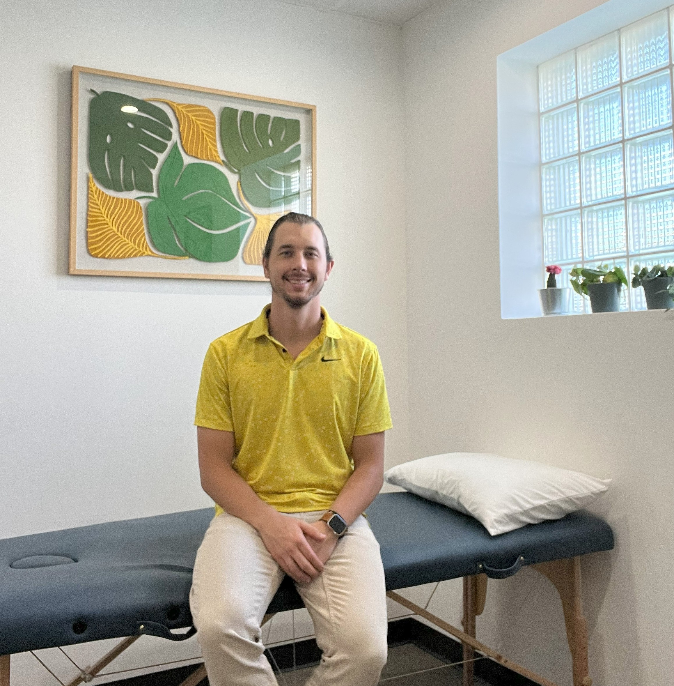

About Link Physio
Zak Norris, DPT
I'm Zak Norris, a Physical Therapist based in Volusia County. Originally from Dallas, Texas, I earned my Doctorate in Physical Therapy from the University of St. Augustine in Austin, TX. I enjoy golfing, landscaping, and beach time — and bring that same energy into helping you move better, live stronger, and feel in control of your health.

Mission
At Link Physio, our mission is to bridge the gap between traditional clinical care and individualized, accessible therapy tailored to your unique needs.
- Personalized Care: One-on-one sessions focused on your goals and lifestyle.
- Expert Care: Utilizing specialized manual skills, evidence-based education, and prescriptive exercise education to relieve pain and promote recovery.
- Accessible Services: Offering flexible, as-needed treatment plans without the restrictions of insurance, empowering you to take charge of your health.
- Dynamic Recovery: Targeted treatment and progressive rehab strategies to get you back to sport, training, or activity.